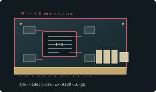

[ WORKSTATION GRAPHICS CARDS // IDENTIFIED COMPONENT ]
AMD Radeon Pro WX 9100 16 GB
Vega 10 / GCN 5, 2017. This entry describes one identifiable model or reference configuration; related products and OEM variants are distinguished below.

MODEL / VARIANT: Professional WX 9100 is not Radeon RX Vega 64. Pro driver certification/support is application and release-specific; verify OEM board details.
Recorded specifications
| Cataloged product | AMD Radeon Pro WX 9100 16 GB |
|---|---|
| Generation / core | Vega 10 / GCN 5, 2017 |
| Core & memory | Vega 10; 4096 stream processors; 16 GB HBM2 with 484 GB/s bandwidth; 230 W typical board power. |
| Host interface & I/O | PCI Express 3.0 x16; two 8-pin auxiliary connectors on reference card; six Mini DisplayPort 1.4 outputs. |
| Variant boundary | Professional WX 9100 is not Radeon RX Vega 64. Pro driver certification/support is application and release-specific; verify OEM board details. |
| Archival identification | Record complete part number, PCB revision, BIOS/firmware, device/subsystem IDs, driver version, adapters, condition, and source-document edition. |
Compatibility, service & archival notes
Reference 16 GB HBM2 WX 9100; confirm exact card part number and driver support.
Check both 8-pin leads, MiniDP panel, blower and HBM thermals. Preserve professional driver package and application certification notes; ensure sufficient airflow.
- Check signaling, slot keying, lane width, power pinout, board length, case clearance, airflow, and PSU requirements for the exact item.
- Use drivers for the device ID and target OS; preserve installer/firmware copies and record their source before updates.
- Do not power hardware with corrosion, cracks, damaged connectors, obstructed cooling, or suspected shorts; document condition before bench testing.
Manufacturer, model & standards sources
- AMD Radeon Pro WX 9100 product pageModel-specific product or interface reference; compare with the physical label and exact board revision.
- Radeon Pro WX 9100 model specificationsModel-specific product or interface reference; compare with the physical label and exact board revision.
- PCI Express specificationsModel-specific product or interface reference; compare with the physical label and exact board revision.
Reference specifications do not supersede the board vendor manual and nameplate. Performance figures are vendor claims unless identified as measured results.